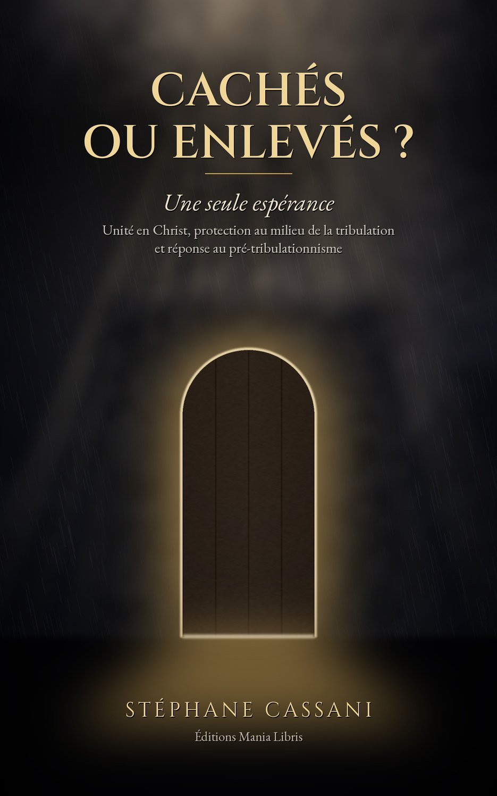

Une seule espérance — Unité en Christ, protection au milieu de la tribulation et réponse au pré-tribulationnisme

L'Église sera-t-elle enlevée avant la Grande Tribulation, ou traversera-t-elle cette période sous la protection de Dieu ? Beaucoup de chrétiens sincères attendent un enlèvement secret qui les retirerait de la terre avant toute épreuve.
Dans cette étude biblique concise, Stéphane Cassani reprend les textes clés — Matthieu 24, Luc 21, 1 et 2 Thessaloniciens, Apocalypse 3, 12 et 20 — en laissant la Bible s'expliquer par la Bible. Il montre qu'il n'y a qu'un seul Corps, une seule dernière trompette et une seule espérance, et que Dieu sait cacher les siens au milieu des jugements, comme Israël en Gosen ou Élie près du torrent, avant de les enlever à sa rencontre lorsque Christ paraît.
Un livre respectueux envers ceux qui pensent autrement, écrit pour fortifier la foi : bâtir sur le roc, quel que soit le chemin par lequel le Seigneur nous conduit jusqu'à lui.
« Va, mon peuple, entre dans ta chambre, Et ferme la porte derrière toi ; Cache-toi pour quelques instants, Jusqu'à ce que la colère soit passée. » — Ésaïe 26:20
Pour tout lecteur de la Bible qui se demande ce que l'Écriture dit vraiment de l'enlèvement et de la tribulation, pour la lecture personnelle ou en groupe : chaque chapitre se termine par des questions de réflexion, et une annexe rassemble les textes clés.
Ebook Kindle et livre broché sur Amazon — livre audio gratuit, lu par l'auteur
Ebook Kindle Livre broché 🎧 Écouter le livre audio Retour au Catalogue